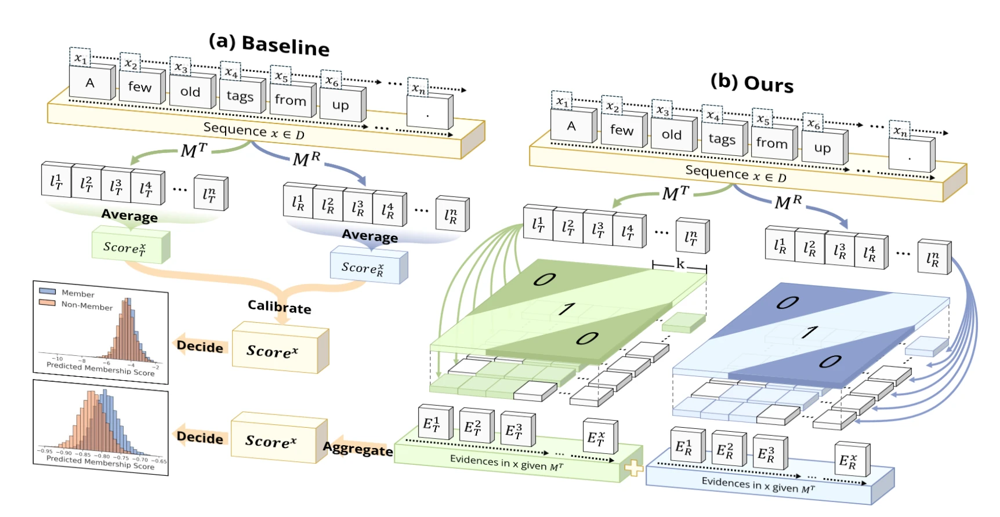
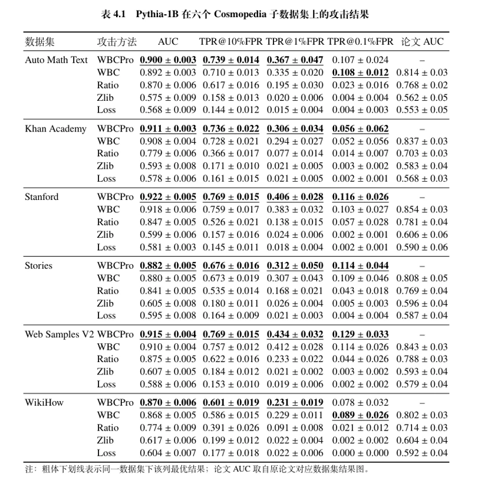
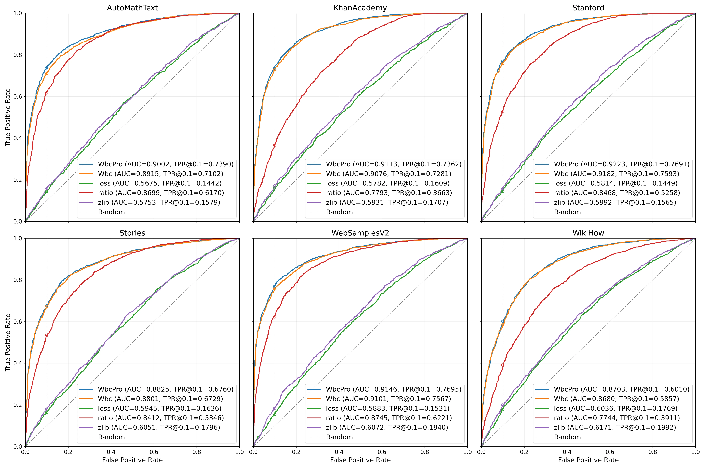
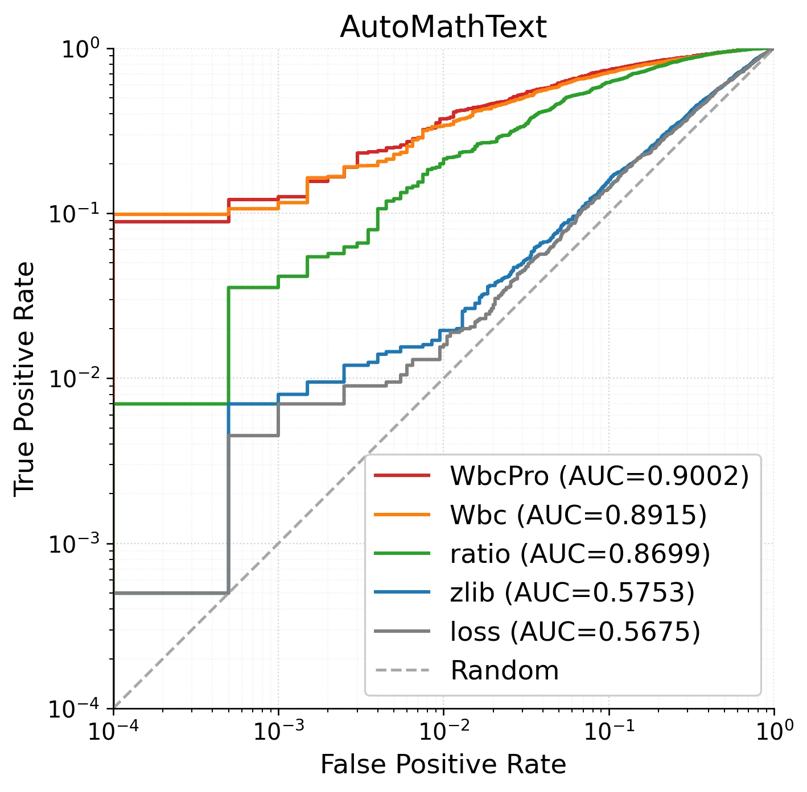
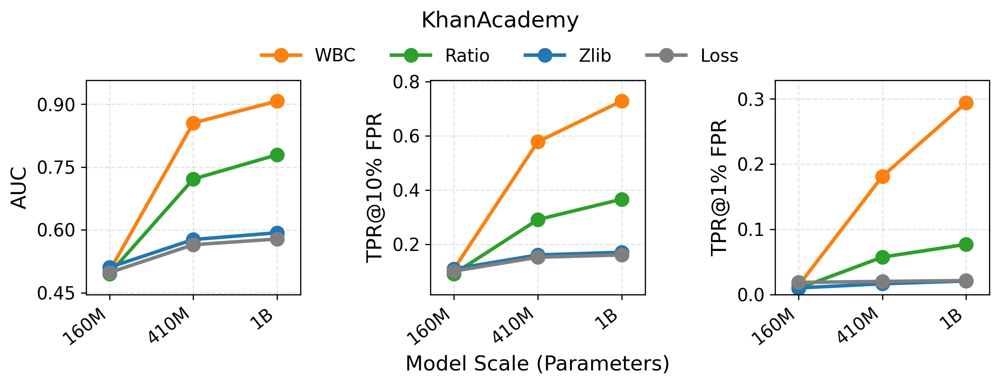
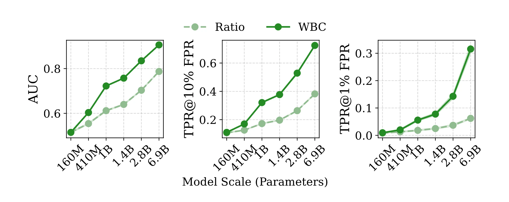
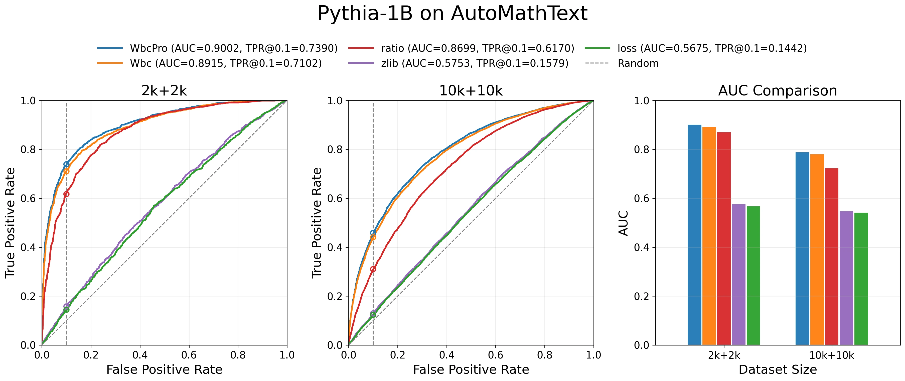

WBC-MIA 复现实验全记录
本学期我选修了 NIS3353 人工智能安全技术课程，大作业是选择一篇论文进行复现并尝试优化，因此我选择了此前在大创项目中阅读过的《Window-based Membership Inference Attacks Against Fine-tuned Large Language Models》。
此前我已经在博客记录了论文的核心内容和初步复现尝试；本文一方面是进一步复现的实验记录，另一方面也是对前次复现笔记的补充。
研究背景
大语言模型微调与数据隐私风险
大语言模型在问答、摘要生成、代码补全等任务上已展现出很强的泛化能力，但其性能提升通常依赖大规模预训练和后续领域微调。对于企业内部文档、医疗记录、教育数据等敏感语料，微调虽然能提升下游任务效果，却也可能让模型对训练样本形成更强的记忆。一旦模型在推理阶段对部分训练样本表现出异常熟悉的概率分布，这种差异就可能被攻击者利用[1][2][3]。
成员推理攻击（MIA）
成员推理攻击（Membership Inference Attack, MIA）是指：攻击者给定一个目标模型和一条待测样本，试图判断该样本是否参与过该模型的训练。其核心不是恢复训练数据内容本身，而是推断”某条数据是否属于训练集”这一成员身份信息[2]。在大语言模型场景下，这类攻击通常通过比较损失、概率或参考模型差异等统计量来完成。
MIA 的危害体现在三个层面：第一，直接暴露敏感数据是否被用于训练；第二，成员推理通常被视为更强隐私泄露的前兆——如果模型能稳定区分”见过”和”没见过”的样本，说明内部已保留可被攻击者利用的训练痕迹；第三，MIA 本身也是重要的隐私评测工具[1][2][3]。
论文选择与复现动机
本课程作业选择复现 USENIX Security 2026 论文《Window-based Membership Inference Attacks Against Fine-tuned Large Language Models》[4]。这篇工作研究的是微调后大语言模型这一现实且高风险的场景，提出的 WBC 方法不依赖梯度、参数差分等强假设，方法逻辑清晰，便于从”原理理解—代码实现—实验验证—局部改进”这一链条开展完整复现。
论文的核心实验主要围绕 Pythia-2.8B 展开，训练与评测数据规模较大。考虑到课程作业的时间限制和算力约束，我们没有机械照搬原文实验，而是优先验证最核心的结论：WBC 相比全局统计基线的优势，以及模型规模变化对攻击效果的影响。
问题与挑战
全局统计量为何在微调 LLM 场景下失效
在 WBC 提出之前，面向语言模型的成员推理攻击大多沿用全局统计量判别的思路。最常见的做法是直接使用目标模型的平均损失，认为训练成员通常具有更低损失；另一类做法则引入参考模型，将目标模型与参考模型的整段损失做差分或比值比较，以削弱样本自身难度差异带来的影响[5][6]。这类方法的共同点，是都假设成员与非成员之间存在较稳定的全局分布偏移。
WBC 论文对这一假设提出了直接挑战。作者首先分析了目标模型与参考模型之间的大规模逐 token 损失差分布，发现微调 LLM 中的成员信号并不是均匀分布在整条文本上的整体下降，而更像是夹杂在噪声中的稀疏局部异常[4]。也就是说，真正能够区分成员身份的证据，往往只集中在少量短语、专名或局部上下文片段中，而不是每个 token 都稳定地“更像训练样本”。
更关键的问题在于，这些微弱信号会被另一类更强但并不可靠的现象掩盖。论文指出，微调后的模型会显著增强对领域特定词汇和表达模式的拟合能力，这会使某些 token 在目标模型上出现非常大的损失下降；但这种下降并不一定意味着样本是成员，因为非成员文本中也可能包含相同的领域词汇或相似表达。换言之，逐 token 损失差中既混有真正的成员记忆信号，也混有由领域适应带来的极端正向噪声，而后者通常更稀疏、更大幅、分布更长尾。
在这种情况下，整段平均就会出现根本性问题。论文将全局平均损失差视为下面的分解形式：
\[ \overline{\Delta}=\frac{1}{n} \sum_{j=1}^{n} \Delta_{j}=\underbrace{\mathbb{I}\left[\mathbf{x} \in D_{train }\right] \cdot \rho_{\delta} \overline{\gamma}}_{\text{membership signal}} + \underbrace{\frac{1}{n} \sum_{j=1}^{n} \xi_{j}}_{\text{rare token noise}} + \underbrace{\overline{\varepsilon}}_{\text{baseline noise}} \]
其中第一项是真正的成员信号，其稀疏而微弱；第二项是由罕见领域词汇引发的长尾极端噪声，通常方差极大；最后一项为基线噪声。于是，全局均值并不会稳定地突出真实成员信号，反而容易被少量异常值牵引，导致成员与非成员的分布分离度下降。也正因为如此，许多传统方法在平均 AUC 上看似仍有一定效果，但在更严格的低误报率区域往往迅速退化，难以支撑高置信度隐私判断[4]。
从局部记忆信号到 WBC 的设计动机
既然问题不在于“有没有信号”，而在于“信号被全局平均稀释并被长尾噪声淹没”，那么更合理的思路就不是继续改造全局均值，而是重新设计信号提取方式。WBC 的出发点正是如此：如果成员信息主要体现在局部连续片段上，那么攻击方法就应该优先在局部范围内聚合证据，而不是一开始就把整条文本压缩成单个平均数。
基于这一观察，论文提出两层关键设计。第一层是局部窗口聚合。我们不再直接比较整条样本的平均损失，而是先对目标模型与参考模型的逐 token 损失差做滑动窗口求和，把原本分散在单个 token 上、难以稳定利用的微弱信号，提升为一个短片段上的局部证据。这样做的目的，是在不过度拉长统计范围的前提下，让同一局部语义片段中的成员信号能够叠加出来，同时削弱孤立噪声点的干扰。
第二层是符号化而非幅值化的比较。在长尾噪声存在时，真正危险的不是没有局部比较，而是局部比较之后仍然继续对数值幅度做平均。如果某个窗口仅仅因为领域词而产生了极大的正差，那么基于均值的聚合仍然会被它主导。因此，WBC 转而只保留窗口比较的方向信息，即只判断某个局部窗口内目标模型是否整体优于参考模型，而不让异常大的窗口值在后续统计中反复放大。这样，窗口之间的融合就更像是在对支持成员的局部证据做计数，而不是让少量极端值决定最终结论。
在此基础上，论文进一步采用几何间隔的多尺度窗口集成。其动机并不复杂：不同数据集、不同样本中的记忆模式未必处于同一尺度，有的更接近短 token 片段，有的则可能体现在稍长的短语或局部结构中。因此，WBC 不预设单一最优窗口，而是通过多种窗口长度并行收集局部证据，再统一融合。
核心方法原理
整体概述
WBC 的整体流程可以概括为四步。首先，针对同一条待测文本，分别计算目标模型与参考模型的逐 token 损失序列。其次，不直接对整条文本做平均，而是在多个窗口长度上对损失差做滑动求和，把 token 级信号提升为局部片段级证据。再次，对每个窗口只判断该局部片段上目标模型是否优于参考模型，将幅值比较转化为方向比较。最后，再将多个窗口尺度上的局部证据进行融合，得到样本级成员分数。
简单来说，WBC 不是寻找单个极端低损失位置，而是统计目标模型是否在足够多的局部窗口上表现出异常熟悉[4]。

WBC 核心思路
设输入样本分词后得到序列 \(x_{1:N}\)，目标模型与参考模型分别记为 \(M_T\) 和 \(M_R\)。对任意模型 \(M\)，第 \(i\) 个位置上的逐 token 负对数似然定义为
\[ \ell_i^{(M)}=-\log p_M(x_i\mid x_{<i}). \]
据此可定义逐位置损失差
\[ \Delta_i=\ell_i^{(M_R)}-\ell_i^{(M_T)}. \]
当 \(\Delta_i>0\) 时，表示目标模型在该位置上的损失低于参考模型，即更可能“见过”该上下文。
如果沿用传统思路，最自然的做法是直接计算
\[ \overline{\Delta}=\frac{1}{N}\sum_{i=1}^{N}\Delta_i \]
并将其作为成员分数。但 WBC 论文指出，在微调大语言模型场景下，这种全局平均会被少量极端大值支配，而这些极端大值往往来自领域适应噪声，并不一定是真正的成员记忆[4]。
为此，WBC 将注意力转向长度为 \(w\) 的局部窗口。对窗口起点 \(k\)，定义窗口累计差值
\[ G_w(k)=\sum_{i=k}^{k+w-1}\Delta_i. \]
若 \(G_w(k)>0\)，则说明在这个长度为 \(w\) 的连续片段上，目标模型累计损失小于参考模型，该窗口支持成员判断。原始 WBC 不直接累计这些窗口差值，而是统计正差窗口占比：
\[ s_w=\frac{1}{N_w}\sum_{k=1}^{N_w}\mathbb{I}\!\left(G_w(k)>0\right), \]
其中 \(N_w=N-w+1\) 为窗口总数。这样一来，超大幅度的正差窗口不会因为数值过大而主导结果，它们只会被记作一次“支持成员”的局部投票。
考虑到不同样本的记忆模式可能分布在不同尺度上，WBC 不使用单一固定窗口，而是在多个窗口长度上重复上述过程。论文采用几何间隔方式生成窗口集合：
\[ w_k=\mathrm{round}\!\left( w_{\min}\cdot \left(\frac{w_{\max}}{w_{\min}}\right)^{\frac{k-1}{|W|-1}} \right), \qquad k=1,2,\dots,|W|. \]
多尺度设计的目的，是同时覆盖 token 级短记忆和短语级、片段级局部结构记忆。由几何间隔方式生成窗口长度，也可以保证短窗口密集覆盖、长窗口稀疏覆盖，符合论文“短窗口更密、长窗口更疏”的设计思想。
整体而言，WBC 的攻击流程可以概括为：
- 计算目标模型和参考模型的逐 token 损失。
- 在多个窗口长度上做滑动求和。
- 仅统计局部窗口中“目标模型更优”的方向信息。
- 将不同尺度的窗口投票结果融合，得到样本级成员分数。
优化与改进：WBCPro
我们在复现原始 WBC 的基础上实现了增强版本 WBCPro，它保留”逐 token 损失差 \(\to\) 滑动窗口 \(\to\) 多窗口融合”的整体框架，但对两个关键环节做了改进。
Wilson 窗口打分
原始 WBC 在固定窗口长度 \(w\) 下使用窗口胜率 \(k_w / n_w\)（\(k_w\) 为满足 \(G_w(k) > 0\) 的窗口数，\(n_w\) 为总窗口数）。我们将其替换为 Wilson 区间上界：
\[ \hat{s}_w = \frac{ \hat{p}_w + \frac{z^2}{2n_w} + z\sqrt{\frac{\hat{p}_w(1-\hat{p}_w)}{n_w} + \frac{z^2}{4n_w^2}} }{ 1 + \frac{z^2}{n_w} }, \qquad \hat{p}_w = \frac{k_w}{n_w}. \]
采用这一形式的原因在于：随着窗口长度增大，可滑动窗口个数快速减少，直接使用 \(k_w / n_w\) 对有限样本波动较为敏感。Wilson 上界显式把有限样本带来的不确定性纳入打分，使不同窗口长度间的分数更平滑，有助于减弱偶然波动带来的误判。
多窗口加权融合
原始 WBC 对各窗口长度做等权平均，WBCPro 引入逆窗口长度加权：
\[ S^{\ast}(x) = \sum_{w \in W} \alpha_w \hat{s}_w, \qquad \alpha_w \propto \frac{1}{\sqrt{w}}, \qquad \sum_{w \in W} \alpha_w = 1. \]
意味着较短窗口会获得略高一些的权重。这种处理方式的灵感来源于作者的 SAMA 论文[8] 的逆步骤权重设计。成员信号往往具有明显的局部性，小到中等尺度的窗口通常更敏感；同时窗口越长，可用窗口数越少，统计方差也越大。用 \(1/\sqrt{w}\) 做温和衰减，能在保留多尺度信息的同时突出更有判别力的局部片段。
改进定位
WBCPro 不是脱离 WBC 的全新攻击，而是建立在 WBC 主体有效前提下的统计稳健性增强。它保留了”局部窗口投票优于全局平均”的核心判断逻辑，在有限窗口数场景下优化计分方式，并改进多尺度融合策略。从六个数据集和不同规模实验的结果看，WBCPro 始终能保持对 WBC 的轻微领先或至少持平，但未达到数量级上的跃升——这说明原方法的骨架本身已经足够强，仍有继续优化的空间。
实验与结果
实验设置
- 实验环境：本次复现实验主要依托上海交通大学超算平台 \(\pi 2.0\) 集群完成。配置为：单卡 Nvidia Tesla V100 32GB GPU + 1 个 CPU 节点（40 核，实际申请 6 核），实验环境通过 Conda 进行管理。单次作业时长限制不超过 12 小时。
- 模型与数据集：WBC 原论文核心实验使用 Pythia-2.8B 在
Cosmopedia 六个子数据集上进行微调与攻击评测，每个数据集 10,000
条训练样本训练 3 个 epoch，在平衡的 10,000 + 10,000
样本上评估攻击效果[4]。考虑到超算平台作业时长限制和显存约束，本次复现做了必要裁剪：
- 核心实验：选用 Pythia-1B 进行微调与攻击，各数据集取 2,000 成员 + 2,000 非成员的子集
- 模型规模对比：额外引入 Pythia-160M 和 Pythia-410M，在同数据集上对比不同规模模型的攻击效果
- 数据规模对照：在 AutoMathText 数据集上补做 10,000 成员 + 10,000 非成员的实验，以分析数据规模的影响
- 对比攻击方法：从原论文公开仓库提供的多种基线中选择了以下四种方法以及我们优化后的 WBCPro 进行对比：
- 攻击配置：
- 最大输入长度：512 tokens
- 参考模型：与目标模型同规模的原始预训练 Pythia 模型
- 滑动窗口集（几何间隔生成）：\(\{2, 3, 4, 6, 9, 13, 18, 25, 32, 40\}\)
- WBC：符号聚合 + 等权平均
- WBCPro：Wilson 窗口打分 + 逆平方根长度加权
- 评价指标：主要报告 AUC，以及 FPR 分别为 0.1、0.01 和 0.001 时的 TPR（即 TPR@10%FPR、TPR@1%FPR 和 TPR@0.1%FPR）。
实验一：Pythia-1B 在六个数据集上的攻击效果
本实验验证 WBC 的核心主张——局部窗口比较优于全局统计量——在复现环境中是否成立。
下表给出了 Pythia-1B 在六个 Cosmopedia 子数据集上（2k+2k）的完整结果，粗体加下划线表示该列最优值，最后一列列出原论文报告的 AUC 供参考。

下图给出了六个数据集上的 ROC 曲线，可以直观看到方法之间的相对排序：

观察上述结果，我们可以得出以下关键结论：
核心结论得到验证：基于局部窗口比较的 WBC / WBCPro 明显强于基于全局统计量的 Loss、Zlib 和 Ratio。WBCPro 与 WBC 的曲线在六个数据集上几乎始终位于最上方，Ratio 处于第二梯队，而 Loss 与 Zlib 更接近随机猜测。
低误报率区域差距更显著：在 TPR@1%FPR 和 TPR@0.1%FPR 这样的严苛指标下，WBC 相比 Ratio 的优势被进一步放大。以 AutoMathText 数据集的对数 ROC 曲线为例：

当关注点转向高置信度检测区域时，局部窗口方法与全局统计基线之间的差距被明显拉开——这对真实攻击场景尤为关键。
WBCPro vs WBC：优化后的算法在所有六个数据集上保持了稳定而温和的增益。这说明基于 Wilson 打分和加权融合的改动确实改善了多窗口聚合的稳健性，但增益是增量式的，并非颠覆性替代。
异常现象：注意到 Pythia-1B 在 2k+2k 下的 AUC 整体高于原论文 Pythia-2.8B 在 10k+10k 下的结果。直觉上，模型越大、数据越多，攻击效果应该越强，这与我们的观察矛盾。这个反常促使我们开展了后续的实验三。
实验二：不同模型规模对攻击效果的影响
验证模型规模是否系统性影响攻击效果，这是原论文的核心发现之一。我们比较了 Pythia-160M、Pythia-410M 和 Pythia-1B 三个规模在同数据集上的表现。
以 KhanAcademy 数据集为例：

在六个数据集上均显著观察到攻击效果随模型规模增大而提升的现象。WBC 的表现随规模增长而明显增强，且整体始终优于其他攻击方法。特别是在 410M 向 1B 扩展后，WBC 在低误报率区域的提升仍然存在——随着模型容量增强，可被局部窗口方法捕捉的成员记忆模式也在同步增强。
相比之下，Ratio 虽然同样呈现上升趋势，但增幅明显更缓；Zlib 与 Loss 基本维持在较低水平，说明单纯的全局统计量不会随模型变大而自动获得同等幅度的收益。
这一趋势与原论文结论一致。下图来自原论文，展示了 160M 到 6.9B 的完整规模谱系：

原论文表明，从 160M 一直到 6.9B，随着规模扩大，WBC 与 Ratio 的效果都会提升，但 WBC 的提升速度更快，尤其在高精度指标上优势会进一步拉大。我们的实验虽然只覆盖了部分规模区间，但已呈现出相同的总体趋势：模型越大，攻击越强；且这种收益对局部窗口方法更为明显。
实验三：不同数据集规模对攻击效果的影响
实验一发现 Pythia-1B 在 2k+2k 设置下的攻击效果明显高于原论文 Pythia-2.8B 在 10k+10k 设置下的结果。为探究这一反常现象的来源，我们补做了在 AutoMathText 上 10k+10k 的对照实验，结果如下：
| 方法 | Pythia-1B 2k+2k | Pythia-1B 10k+10k | 论文 Pythia-2.8B 10k+10k[4] |
|---|---|---|---|
| WBCPro | 0.900 | 0.788 | — |
| WBC | 0.892 | 0.780 | 0.814 |
| Ratio | 0.870 | 0.723 | 0.768 |
| Zlib | 0.575 | 0.547 | 0.562 |
| Loss | 0.568 | 0.541 | 0.553 |

- 数据集规模扩大后，攻击效果整体下降：当评测规模从
2k+2k 扩展到 10k+10k
后，五种攻击方法的效果都出现了整体下降，而且下降最明显的恰恰是此前表现最强的
WBC、WBCPro 和
Ratio。这说明一个反直觉的事实：较小规模子集上观察到的高攻击成功率，并不能简单理解为”模型记忆更深”——它很可能还叠加了样本子集更集中、更纯粹或更易区分的因素。
- 这解释了实验一的异常现象。扩展到 10k+10k 后，WBC 与 WBCPro 的 AUC 明显回落，更接近原论文在 Pythia-2.8B 上的结果。先前偏高的结果不是因为复现方法存在系统性偏差，而是小规模子集在样本筛选后保留了更强、更集中的可攻击信号。
- 方法间的相对排序保持不变：10k+10k 设置下，WBCPro 仍略优于 WBC，二者继续稳定领先于 Ratio，而 Loss 与 Zlib 依然明显较弱。WBC 相比全局统计基线的优势没有因数据规模扩大而消失，原论文的核心结论依然成立。
总结与启示
复现总结
从目前完成的工作看，本次复现是阶段性成功的：
- 核心结论验证：WBC 在本地实验中稳定优于 Loss、Zlib 与 Ratio 等全局统计基线，“局部窗口比较优于全局统计量”的核心判断得到了较清楚的验证。
- 模型规模趋势：从 160M 到 1B，攻击效果随模型规模扩大而增强，与原论文趋势一致。
- 数据规模效应：通过 10k+10k 对照实验，初步说明数据规模与样本构成对攻击结果具有显著影响——小规模子集下偏高的结果并不具有普遍代表性。
方法总结
WBC 的优势： - 直接面向微调 LLM 中的局部记忆现象建模，而非将整段文本压缩为单一全局统计量 - 方法结构清晰：窗口切分 \(\to\) 局部比较 \(\to\) 符号聚合 \(\to\) 多尺度融合，层次分明 - 工程可扩展性好：窗口长度集合、打分方式和聚合策略均可独立修改
WBC 的局限： - 依赖与目标模型规模匹配的参考模型，攻击成本高于简单损失基线 - 多窗口滑动比较会显著增加推理开销 - 效果依赖样本中是否存在可被局部窗口捕获的成员信号，受文本长度、数据分布等因素影响
对大模型隐私安全的启示
“能正常完成任务”不等于”不存在隐私泄露”：即使攻击者无法访问模型参数，仅凭输出概率配合参考模型，也可能以较高置信度判断训练成员身份。
局部统计评测应成为隐私分析的一部分：仅观察平均困惑度或验证集损失往往不足以刻画真实的隐私暴露程度；更细粒度的局部统计评测同样重要。
规模不只是一个维度：隐私风险不仅与模型规模有关，还与训练数据的构成方式、样本分布和筛选策略密切相关。实验三的数据规模效应就是一个生动例证。
防御需要系统性：对于使用专有语料微调大模型的场景，应在模型上线前引入系统性的成员推理评测流程，结合数据去重、正则化、差分隐私等策略综合降低泄露风险。
参考资料
- Hu H, Salcic Z, Sun L, et al. Membership Inference Attacks on Machine Learning: A Survey[J]. ACM Computing Surveys, 2022. ↩︎
- Niu J, Liu P, Zhu X, et al. A Survey on Membership Inference Attacks and Defenses in Machine Learning[J]. Journal of Information and Intelligence, 2024. ↩︎
- Yan B, Li K, Xu M, et al. On Protecting the Data Privacy of Large Language Models: A Survey[C]. ICMC, 2024. ↩︎
- Chen Y, Du Y, Zhang K, et al. Window-based Membership Inference Attacks Against Fine-tuned Large Language Models[C]. USENIX Security, 2026. ↩︎
- Yeom S, Giacomelli I, Fredrikson M, et al. Privacy Risk in Machine Learning: Analyzing the Connection to Overfitting[C]. CSF, 2018. ↩︎
- Carlini N, Tramèr F, Wallace E, et al. Extracting Training Data from Large Language Models[C]. USENIX Security, 2021. ↩︎
- Watson L, Guo C, Cormode G, et al. On the Importance of Difficulty Calibration in Membership Inference Attacks[C]. ICLR, 2022. ↩︎
- Chen Y, Zhang K, Du Y, et al. Membership Inference Attacks Against Fine-tuned Diffusion Language Models[C]. ICLR, 2026. ↩︎